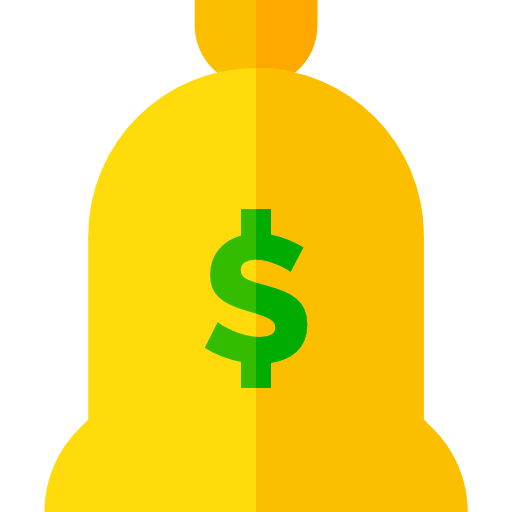

A energia eólica
O que é ?
Energia eólica, é a utilização de um recurso inesgotável (o vento) para a movimentação de suas hélices que transforma a energia mecânica em energia elétrica. Veja o vídeo para entender melhor .
Qual o motivo de escolher ela?
Mesmo não compreendido por grande parte da população, a energia eólica traz grandes vantagens a população , e algumas delas são :
Sustentabilidade

Se formos pegarmos em conta o caráter sustentável, a energia eólica é inesgotável, não emite gases poluentes nem gera resíduos e diminui a emissão de gases de efeito de estufa.
Economia

Com relação à economia, ela gera inúmeros empregos novos, geração de renda em lugares desfavorecidos, pouca manutenção, é uma das fontes mais baratas de energia podendo competir em termos de rentabilidade com as fontes de energia tradicionais, os parques eólicos são compatíveis com outros usos e utilizações do terreno como a agricultura e criação de gado, e por fim em menos de 6 meses o dinheiro investido é recuperado.
Politica

Se formos pensar pelo lado político, a implementação de tal transformação de energia também traz benefícios , já que reduz a elevada dependência do exterior causada pela dependência em combustíveis fósseis , também com esta implementação iria diminuir a emissão de CO2 e assim causar uma poupança nos cofres brasileiros e um investimento em outros setores na atividade econômica graças ao protocolo de Quioto que penaliza quem não consegue efetivar esses acordos e beneficia o mercado nacional de quem consegue cumprir .